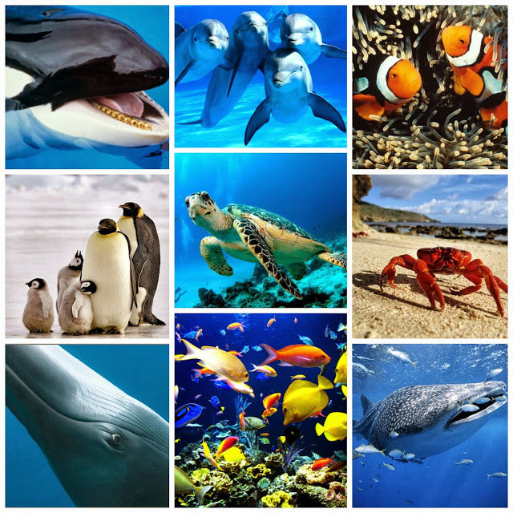

Los animales acuáticos son aquellos que viven total o parcialmente en el agua. Pueden
incluir una amplia variedad de organismos, desde peces y mamíferos marinos
hasta crustáceos, moluscos, reptiles y aves adaptadas para vivir en hábitats acuáticos.
Estos animales han desarrollado una variedad de adaptaciones físicas y comportamentales
para sobrevivir en entornos acuáticos, lo que les permite aprovechar los recursos
disponibles en estos ecosistemas.
.
Tipos
1. **Peces**: Son el grupo más diverso de animales acuáticos y se encuentran en una
variedad de hábitats,desde agua dulce hasta agua salada. Incluyen especies como el pez payaso,
el atún, el salmón y la trucha.
2. **Mamíferos marinos**: Estos animales incluyen delfines, ballenas, focas, leones marinos y
morsas. Ha evolucionado adaptaciones únicas para vivir en el agua, como aletas en lugar de
extremidades y la capacidad de respirar aire a través de un orificio en la parte superior de
sus cabezas.

3. **Crustáceos**: Este grupo incluye cangrejos, langostas, camarones y langostinos. Tienen
cuerpos segmentados cubiertos por un caparazón duro y muchas especies son de importancia
económica para la pesca.
4. **Moluscos**: Incluyen animales como pulpos, calamares, mejillones, almejas y caracoles.
Tienen cuerpos blandos, a menudo protegidos por una concha externa.
5. **Reptiles acuáticos**: Algunas especies de reptiles, como las tortugas marinas y los
cocodrilos, pasan gran parte de su vida en el agua. Las tortugas marinas, por ejemplo,
dependen del agua para reproducirse y alimentarse.
6. **Aves acuáticas**: Estas aves viven en hábitats acuáticos y dependen del agua para
alimentarse y reproducirse. Ejemplos incluyen patos, gaviotas, pelícanos y flamencos.
Caracteristicas
Las características generales de los animales acuáticos pueden variar según el
grupo al que pertenezcan, pero algunas características comunes incluyen:
1. **Adaptaciones para la vida en el agua**: Los animales acuáticos suelen tener
adaptaciones físicas específicas para vivir en ambientes acuáticos, como aletas en
lugar de extremidades, cuerpos hidrodinámicos y branquias para respirar bajo el agua.
2. **Respiración**: Muchos animales acuáticos respiran a través de branquias, que
les permiten extraer oxígeno del agua. Sin embargo, algunos mamíferos marinos, como
ballenas y delfines, son mamíferos que respiran aire y necesitan subir a la superficie
para respirar.
3. **Termorregulación**: Algunos animales acuáticos, especialmente aquellos que viven
en aguas frías, tienen adaptaciones para mantener su temperatura corporal constante,
como una gruesa capa de grasa o un sistema circulatorio especializado.
4. **Hábitats diversos**: Los animales acuáticos pueden encontrarse en una variedad de
hábitats, desde agua dulce hasta agua salada, incluidos océanos, ríos, lagos, arrecifes de
coral y estuarios.
5. **Alimentación**: La dieta de los animales acuáticos puede variar ampliamente dependiendo
de la especie y el hábitat. Algunos son depredadores, cazando presas más pequeñas, mientras
que otros se alimentan de algas u otros materiales orgánicos.
6. **Reproducción**: Los animales acuáticos tienen una variedad de estrategias de reproducción,
que pueden incluir la puesta de huevos en el agua, el nacimiento de crías vivas o el cuidado
parental.
 Los animales acuáticos son aquellos que viven total o parcialmente en el agua. Pueden
Los animales acuáticos son aquellos que viven total o parcialmente en el agua. Pueden  3. **Termorregulación**: Algunos animales acuáticos, especialmente aquellos que viven
3. **Termorregulación**: Algunos animales acuáticos, especialmente aquellos que viven